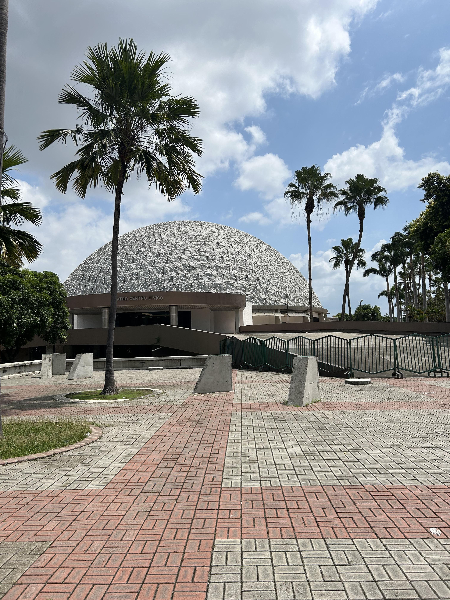

Arte y cultura
Arte al aire libre
«La Patria Joven», de Oswaldo Guayasamín; réplica de la «Venus Tropical»; esculturas de caballos en la pileta y bustos de personajes históricos.
Detalles del patrimonio
«La Patria Joven», de Oswaldo Guayasamín, está elaborada en bronce. Cerca de ella se encuentra una columna en homenaje a los Próceres de la Independencia, con nombres de participantes en la gesta del 9 de octubre de 1820.
La réplica de la «Venus Tropical» corresponde a una obra del escultor lojano Evelio Tandazo Vivanco. Las esculturas de caballos de la pileta central recuerdan el pasado ecuestre del terreno, que fue sede del antiguo hipódromo de Guayaquil.
Entre los personajes representados en bustos se encuentran Luis Vernaza, Alfredo Valenzuela, Aurelio Carrera Calvo, Emilio Estrada Icaza, Alberto Guerrero Martínez, Leopoldo Izquieta Pérez, Enrique Baquerizo Moreno y Francisco Icaza Bustamante.
El Teatro Centro Cívico Eloy Alfaro fue inaugurado en 1970 y complementa la oferta artística del parque con un espacio para las artes escénicas, conciertos y actos cívicos.
Teatro Centro Cívico Eloy Alfaro
Sede de la Orquesta Sinfónica de Guayaquil, con capacidad para 1.522 personas.
